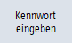

Übersicht
Die mit Kennwörtern geschützten Zugriffsstufen aktivieren Sie über die Bedienoberfläche.
Für die Kennwortbearbeitung haben Sie folgende Möglichkeiten:
-
Neues Kennwort eingeben
-
Kennwort ändern
-
Kennwort löschen
Kennwort eingeben
 | 1. | Wählen Sie den Bedienbereich "Inbetriebnahme" an. |
| | 2. | Drücken Sie den Softkey "Kennwort". |
|  | 3. | Drücken Sie den Softkey "Kennwort eingeben".
Das Fenster "Kennwort eingeben" wird geöffnet. |
 | 4. | Geben Sie eines der möglichen Standard-Kennwörter ein und drücken Sie den Softkey "OK", um die Eingabe zu bestätigen. Ein erlaubtes Kennwort wird gesetzt und die gültige Zugriffsstufe wird angezeigt. Ungültige Kennwörter werden nicht angenommen. |
Kennwort ändern
Um einen sicheren Zugriffsschutz zu erhalten, müssen Sie die Standard-Kennwörter ändern.
 | 1. | Drücken Sie den Softkey "Kennwort ändern".
Das Fenster "Kennwort ändern" wird geöffnet. |
| | 2. | Wählen Sie den Bereich (z. B. Anwender) an, für den Sie ein neues Kennwort vergeben möchten. |
| | 3. | Geben Sie in den Eingabefeldern "neues Kennwort" und "Kennwort wiederholen" das neue Kennwort ein. Vergeben Sie immer ein sicheres Kennwort. |
| | 4. | Drücken Sie den Softkey "OK", um die Eingabe zu bestätigen. Es wird nur dann ein neues gültiges Kennwort übernommen, wenn beide eingegebenen Begriffe identisch sind. |
| Hinweis |
Ungültige Kennwörter werden von der Bedien-Software nicht angenommen. Beachten Sie die Regeln für sichere Kennwörter: Ein Kennwort muss mindestens aus 8 und kann maximal aus 32 Zeichen bestehen. Zulässige Zeichen sind: Die Zeichenkombination eines Kennworts muss enthalten: Ein Kennwort darf folgenden Bezeichnern nicht zu ähnlich sein: Benutzernamen (Hersteller, Service, Anwender) Rechnernamen Den im Linux-Kennwortfile zu einem Benutzer zusätzlich speicherbaren Werten (sog. GECOS-Daten)
Bei der Wahl eines Kennworts wird empfohlen, sich auf den Zeichenvorrat der Bedientafelfront zu beschränken. |
Kennwort löschen
 | | Drücken Sie den Softkey "Kennwort löschen". Die Zugriffsberechtigung wird wieder zurückgesetzt. |
| Hinweis |
Die Zugriffsberechtigung wird durch POWER ON nicht automatisch gelöscht. |